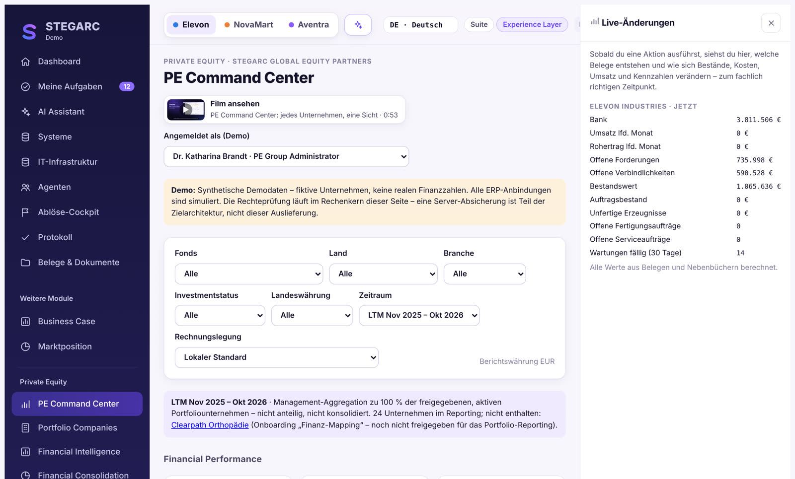

ERP-Transformation
Strategie, Zielbild, Architektur und Umsetzung – herstellerunabhängig und end-to-end.
RISE oder Alternativen?Herstellerunabhängige ERP-Transformation, SAP S/4HANA, Microsoft Dynamics, Oracle, komplexe Cutover und Go-live sowie KI-Lösungen – mit Umsetzungskraft, über 20 Jahren Erfahrung und klarem Ergebnisfokus.

Transparente Steuerung, belastbare Daten und messbarer Projektfortschritt für einen sicheren Go-live. Mit STEGARC sehen Sie Aufgaben, Freigaben und Kennzahlen aus allen Systemen in einer Oberfläche.
Sechs Kernleistungen für erfolgreiche Transformationen, ergänzt um Datenmigration, Sonderentwicklungen und die STEGARC-Plattform.
Strategie, Zielbild, Architektur und Umsetzung – herstellerunabhängig und end-to-end.
RISE oder Alternativen?Planung, Einführung, Conversion und Rollout – inklusive Central Finance und internationaler Deployments.
ECC-Wartungsende 2027Auswahl, Einführung und Harmonisierung von Unternehmensprozessen auf Dynamics 365.
Migration und Integration in komplexen Systemlandschaften – stabil und zukunftssicher.
Planung, Generalproben und Orchestrierung für einen sicheren Produktivstart mit minimalem Risiko.
Zehn Regeln für den CutoverPragmatische KI-Anwendungsfälle mit menschlicher Freigabe und messbarem Mehrwert für Ihre Prozesse.
KI im ERP sinnvoll einsetzenStrukturiertes Vorgehen, starke Umsetzung und messbarer Nutzen – von der Konzeption bis zum Go-live. Aus über 20 Jahren Programmen in DAX-Konzernen und im Mittelstand.
„Geht nicht.“Geht. Nur nicht im Standard.
Viele Anforderungen scheitern nicht an der Technik, sondern daran, dass niemand die Verantwortung für eine Lösung außerhalb des Standards übernehmen will. Ich übernehme sie – mit einer Architektur, die den ERP-Kern sauber hält, mit Tests und mit einer Dokumentation, die Ihr Team weiterführen kann.
KI ist kein Selbstzweck. Ich setze sie ein, wo sie wiederkehrende Arbeit abnimmt, Entscheidungen besser vorbereitet oder Wissen schneller auffindbar macht – und sage ehrlich, wann eine klassische Regel die bessere Lösung ist.
Beispiel mit erfundenen Daten. Gebucht wird erst, wenn ein Mensch freigibt – bei Buchungen, Freigaben und Zahlungen ohne Ausnahme.
Sie wissen in jeder Phase, was passiert, was es kostet und was als Nächstes entschieden werden muss.
Programme in DAX-Konzernen und international tätigen Unternehmen – und Sonderfälle im Mittelstand, für die es keine Standardantwort gab.
Kunden nenne ich hier bewusst nicht namentlich. Für einen persönlichen Austausch teile ich gern Referenzen und stelle den Kontakt zu Ansprechpartnern her.
Meine KI-native Plattform, entstanden aus den Problemen, die ich in Transformationen immer wieder gesehen habe. Sie legt sich über bestehende Systeme und wächst Schritt für Schritt zu einem eigenständigen ERP.

Ich bin Berater, Umsetzer und Unternehmer. Seit mehr als 20 Jahren bin ich dort, wo ERP-Projekte entschieden werden: in der Planung, im Cutover-Raum und am Montag nach dem Go-live.
Ich komme aus der SAP-Beratung. 2011 habe ich mein erstes eigenes Beratungsunternehmen gegründet und zehn Jahre als Geschäftsführer geführt. Seitdem leite ich SAP-Programme in DAX-Konzernen und international tätigen Unternehmen, mit den Schwerpunkten SAP S/4HANA, Central Finance und HR.
In der Schweiz habe ich als Area Deployment Manager das Deployment einer Region in einem der größten SAP-S/4HANA-Rollouts verantwortet. Als Global Cutover Manager habe ich Go-lives über Länder und Zeitzonen hinweg gesteuert, als Programmleiter HR-Transformationen von SAP HCM nach SuccessFactors bis zum internationalen Rollout geführt. Und immer wieder habe ich Unternehmen in Sonderfällen begleitet: Lösung erarbeitet, umgesetzt und sauber in den Regelbetrieb übergeben. Zuletzt war ich als ERP Transformation Advisor und Solution Architect tätig.
Dabei habe ich gelernt, dass Projekte selten an der Software scheitern. Sie scheitern an unklaren Entscheidungen, an fehlender Verantwortung für Sonderfälle und an Plänen, die nur auf Folien funktionieren. Genau dort setze ich an.
Sie sprechen immer direkt mit mir. Meine Empfehlungen richten sich nach Ihrem Bedarf, nicht nach einem Partnerprogramm. Referenzen und Kontakte zu früheren Auftraggebern teile ich gern im persönlichen Gespräch.
Ich lebe mit meiner Familie in Eppingen im Kraichgau. Ehrenamtlich führe ich als Vorsitzender und Cheftrainer einen Rollkunstlaufverein – Teamarbeit, Geduld und Leistung unter Druck kenne ich also auch abseits der IT.
Deutsch, Englisch, Französisch
Nein. Mein Schwerpunkt liegt historisch bei SAP, ich berate aber herstellerunabhängig – auch zu Microsoft Dynamics 365, Oracle und ERP-Systemen für den Mittelstand.
Die Mainstream-Wartung für SAP ECC 6.0 endet Ende 2027. Danach gibt es kostenpflichtige Verlängerungen bis 2030 und unter Bedingungen darüber hinaus. Ausführlich im Blog.
Ja, das ist ein Schwerpunkt: Erweiterungen, Schnittstellen, Portale und Services neben dem ERP-Kern – getestet, dokumentiert und updatefähig.
Dort, wo sie messbar Arbeit abnimmt. Entscheidungen mit Wirkung wie Buchungen oder Zahlungen bestätigt immer ein Mensch.
Ja. Kunden nenne ich auf der Website bewusst nicht namentlich, teile Referenzen und Ansprechpartner aber gern im persönlichen Gespräch.
Mit einem kostenfreien Erstgespräch. Danach schlage ich einen kompakten Einstieg vor, meist einen Workshop mit klarem Ergebnis.
ERP-Entscheidung, laufendes Projekt, Sonderanforderung oder KI-Idee: Ich melde mich mit einem Vorschlag für ein erstes, kostenfreies Gespräch.